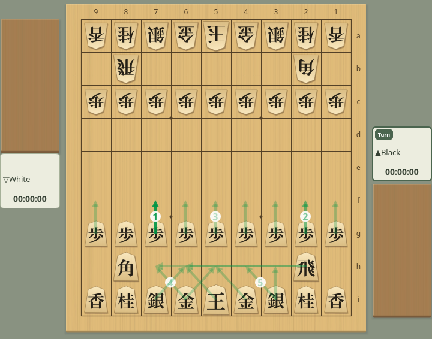

Viewing the Book
Open a book file in the Joseki window and see the book moves for the displayed position
Choose View → Joseki to show the Joseki window. At first it sits in the tabs at the bottom of the main window. If the table is cramped, enlarge the panel or turn it into a separate window (see the Docks guide).
Click Open and choose a YaneuraOu-format (#YANEURAOU-DB2016) book file (.db), such as the standard_book.db bundled with YaneuraOu. New creates an empty book, and History opens a recently used file. With Auto Load checked, the last file is loaded the next time the window is shown.

Joseki window: the initial position with standard_book.db open
The book moves registered for the displayed position are listed in the order they appear in the file.
- Book Move and Response: the registered move and the expected reply of the opponent. For a move whose response is None, if the next position has book moves, the move YaneuraOu ponders on (the book move of the next position with the highest frequency, or the highest score if tied) is shown in gray in parentheses (the book file is not changed)
- Score, Depth and Frequency: the score, search depth and occurrence count stored in the book
- Share: the move's share of the total frequency of the book moves in this position
- Comment: a comment attached to the book move
- Edit and Delete: buttons that edit or delete the book move (Play appears on your turn during games and whenever no game is in progress)
When you select a move in the game record or a game advances, the table switches to the book moves of that position. Move numbers are ignored, so the same position always shows the same book moves. If the book file registers the same position separately under different move numbers, the entry for the displayed move number (or else the first one in the file) is shown and edited. Saving keeps each of these entries.
Details shows the SFEN of the position and of the book entry. ■ Stop pauses the book display and ▶ Resume restarts it. While the Joseki window is behind another tab it is not updated; when it comes to the front again it shows the book moves of the displayed position. The bottom line shows the file name, the number of positions and the number of book moves for this position. While a file is being loaded or saved, it also shows Loading... or Saving... (a large book file can take a few seconds to load). A hint is shown inside the table when no book file is open or the position has no book moves.
Check View → Show book moves on board to draw the book moves of the displayed position as green arrows on the board. Board arrows in the Joseki window toggles the same setting.
The first five moves of the table are numbered in table order, and moves with a higher frequency are drawn darker. Arrows are shown only while a book file is open in the Joseki window; they are hidden while ■ Stop has paused the display and on the engine's turn during a game. Where they overlap, the engine's arrows from consideration or games are drawn on top.

Book moves on the board: the book moves of the initial position (numbered in table order)